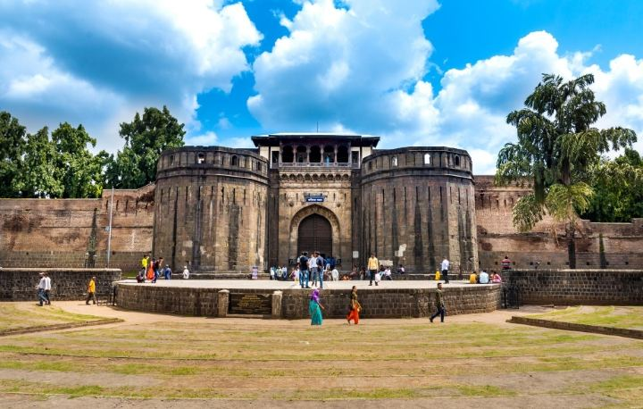
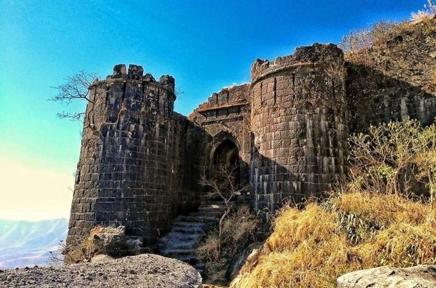
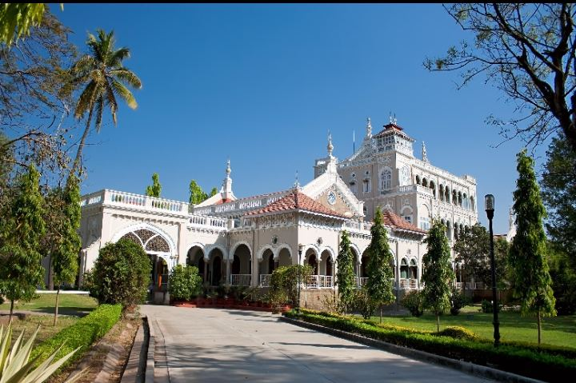
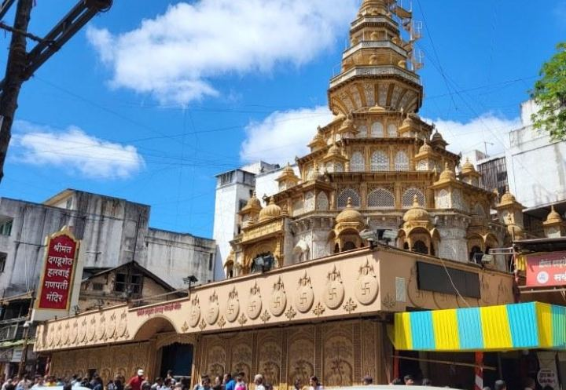
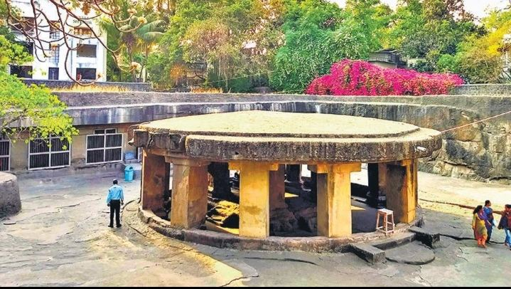
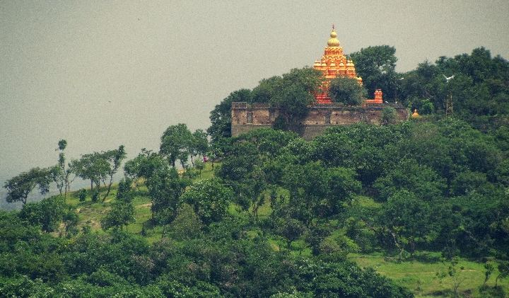
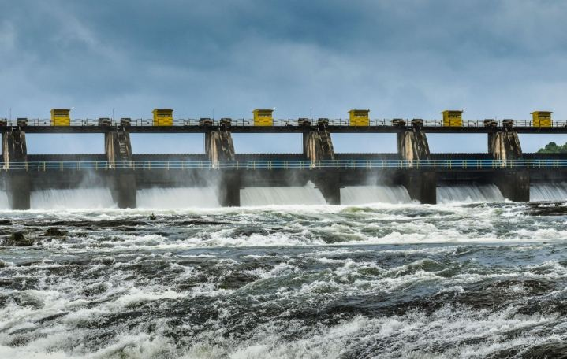
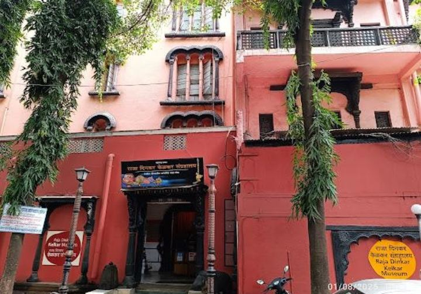
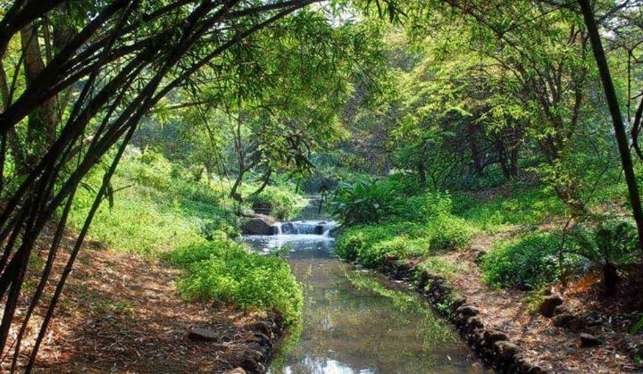
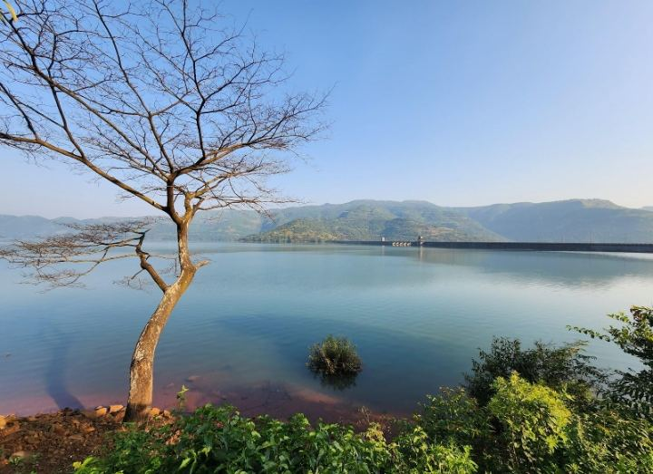

Pune sits between the Western Ghats and the Deccan plateau. It was the Peshwas' capital, Gandhi's place of detention, and is now a student city that loves misal and monsoon. These ten stops show all three sides of it, plus its lakes, museums and gardens.
Shaniwar Wada

Photo: The main gate and bastions of Shaniwar Wada.
Start at the stone heart of old Pune. Peshwa Bajirao I began this seat of power in 1732, and it ran the Maratha confederacy for generations. A fire in 1828 destroyed most of the palace interior, so today you walk through huge gates, fountains and foundations that hint at what stood here.
Come back after dark for the light-and-sound show that retells the Peshwa story. The big lawns are also a good place to sit and watch the city go by.
Best time: morning or evening. Time needed: 1 to 2 hours. Where: Old city, near Kasba Peth.
Sinhagad Fort

Photo: Stone bastions and gateway of Sinhagad Fort.
About 25 km from the city, Sinhagad is the classic Pune day trip. The fort is tied to the 1670 battle in which Tanaji Malusare died retaking it for Shivaji Maharaj. From the ramparts you can see the Khadakwasla reservoir and the layered hills around it.
Go early on a monsoon weekday: the mist, waterfalls and green slopes are the best the region offers. Locals swear by the hot pithla-bhakri and kanda bhaji at the hilltop stalls.
Best time: July to February, early morning. Time needed: half a day. Tip: weekends get crowded, and the road can jam.
Aga Khan Palace

Photo: The Aga Khan Palace and its gardens.
Sultan Muhammad Shah Aga Khan III built this palace in 1892, and its arches and lawns feel calm and open. During the freedom movement, Mahatma Gandhi, Kasturba Gandhi and Mahadev Desai were detained here from 1942 to 1944, and Kasturba and Desai died during that time. Memorial samadhis stand in the grounds.
Inside, a small museum holds photographs and personal items from that period. It is a quiet, reflective stop and a good counterweight to the busier sights.
Best time: late morning to afternoon. Time needed: 1 to 1.5 hours. Where: Yerawada, on the way to the airport.
Dagdusheth Halwai Ganpati Temple

Photo: The golden tower of Dagdusheth Halwai Ganpati Temple.
This is Pune's most beloved Ganesh temple, established by a sweet maker whose family name it still carries. The ornate idol draws long queues daily, and during the Ganesh festival in August or September the whole area becomes a river of devotees, lights and drums.
Even if you are not religious, a visit during Ganeshotsav is one of the best ways to understand the city's culture. Aarti times are a good moment to be inside.
Best time: early morning on weekdays. Time needed: 30 to 60 minutes. Where: Budhwar Peth.
Pataleshwar Cave Temple

Photo: The circular Nandi pavilion at Pataleshwar.
Hidden among modern buildings off Jangali Maharaj Road, this temple was carved from a single piece of basalt, probably in the 8th century. The circular Nandi pavilion in front and the rows of plain pillars give it a stern, ancient feel that surprises first-time visitors.
It is small, free to enter and rarely crowded, so it pairs well with a walk along the street outside.
Best time: morning. Time needed: 30 minutes. Where: Shivajinagar.
Parvati Hill

Photo: The hilltop temple on Parvati Hill.
A short, steep climb of roughly a hundred steps leads to a cluster of Peshwa-era temples and the best free view of Pune. At sunrise the city lies spread out below you, with the rivers and the distant ghats catching the first light.
Many Punekars use these steps as a morning workout, so expect company. A small museum near the top has Peshwa-era relics.
Best time: sunrise or just before sunset. Time needed: 1 to 1.5 hours. Tip: wear proper footwear; the steps get slippery in rain.
Khadakwasla Dam

Photo: Water released through the Khadakwasla Dam gates.
About 20 km from the city centre, this dam on the Mutha river is where Punekars go to unwind. The reservoir is wide and calm, with the Sahyadri hills behind it, and sunset here is hard to beat.
Stalls near the water sell hot corn and bhajiya, a classic evening snack, especially in the rains.
Best time: late afternoon to sunset. Time needed: 1 to 2 hours. Tip: combine with Sinhagad on the same trip.
Raja Dinkar Kelkar Museum

Photo: The entrance of the Raja Dinkar Kelkar Museum.
This private museum in Shukrawar Peth is built around the lifetime collection of Dinkar Kelkar, who gathered everyday and artistic objects from across India, and named it for his late son Raja. Expect lamps, musical instruments, carved doors, textiles and kitchen tools, each showing how people really lived.
It is a fine rainy-day stop and an easy pairing with Shaniwar Wada and Dagdusheth.
Best time: afternoon. Time needed: 1.5 to 2 hours. Where: Shukrawar Peth.
Osho Teerth Park

Photo: A shaded stream among the bamboo at Osho Teerth Park.
Set along a stream in Koregaon Park, this is a quiet Japanese-style garden of bamboo, paths and a small waterfall. It is one of the few places in the middle of the city where traffic noise fades.
Walk in the early morning when joggers and birdwatchers have the paths nearly to themselves, then grab a coffee at one of the cafés nearby.
Best time: early morning. Time needed: 1 hour. Tip: check entry rules and timings, as they differ from day to day.
Mulshi Lake

Photo: Mulshi Lake with the Sahyadri hills beyond.
About 40 km west of Pune, Mulshi is a long, quiet reservoir surrounded by hills that turn emerald after the first rains. Roads here wind past waterfalls, tea stalls and village scenes.
It is a good option for a slow drive or a picnic when you want green views without a hard trek.
Best time: July to October. Time needed: half a day. Tip: drive carefully, as roads are narrow and wet during the monsoon.
Planning your trip
October to February is the most comfortable season, with dry, mild days. The monsoon (June to September) turns the hills green and is best for Sinhagad. Plan the old-city sights (Shaniwar Wada, Dagdusheth, Pataleshwar, Kelkar Museum) on one day, Sinhagad with Khadakwasla on another, and keep Mulshi for a slow monsoon drive. Check opening hours before you go, since timings and entry fees change.